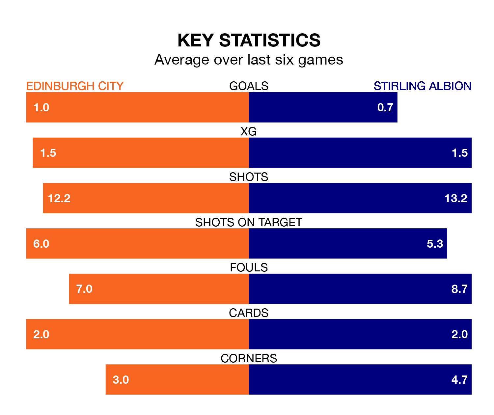

Saturday's match at the Meadowbank Stadium sees the league's two bottom sides face each other, as rock-bottom Edinburgh City host Stirling Albion.
Edinburgh have picked up 14 points from their first 14 League One games, with three wins and five draws.
That is 21 points less than the Binos have collected, having won nine and drawn eight.
In Blair Currie, Stirling can rely on one of the league's safest pair of hands. He has kept nine clean sheets in his 32 appearances this season, and no 'keeper has prevented the opposition scoring more often in League One.
In Edinburgh's net, Andrew McNeil has one clean sheet in nine games. He has conceded a goal every 34 minutes, 60% more often than the 56 minutes between goals for Currie.
City are in bad form in League One, with one win and five losses from their last six games.
With a win and a draw over that period, Albion's form is slightly better – they have taken four points from 18, compared to the home side's three.
In the last 10 years, Edinburgh and Stirling have played each other on 25 occasions. Edinburgh won nine of them, Stirling 11, and they drew five times.
On average, Edinburgh scored 1.0 goals and the Binos 1.3 in those matches.
Their last meeting was on February 24, when Stirling won 4-0 at home.
With 35 goals in 34 games so far this season, the Binos are the league's lowest scorers with 1.0 goals per game. And they are conceding at an average rate, letting in 56 goals at a rate of 1.6 per game.
Edinburgh are also below average scorers, with 1.1 goals per game, compared to a league average of 1.6. They have conceded 2.7 goals per game.
Edinburgh's last match was on April 20, a 2-1 loss against Annan Athletic, with Oliver McDonald getting the goal for Edinburgh.
Stirling drew 0-0 with Queen of the South last time out, also on April 20.
Updated: 07:59 (UTC), 26/04/24